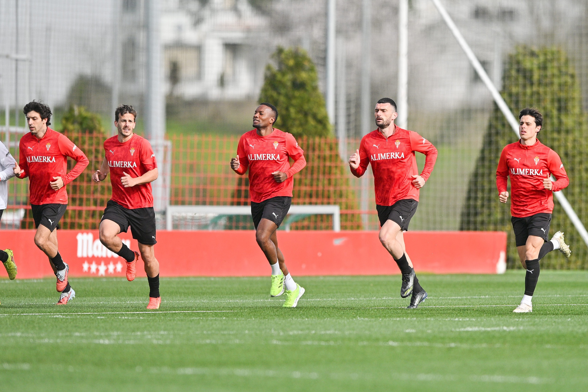
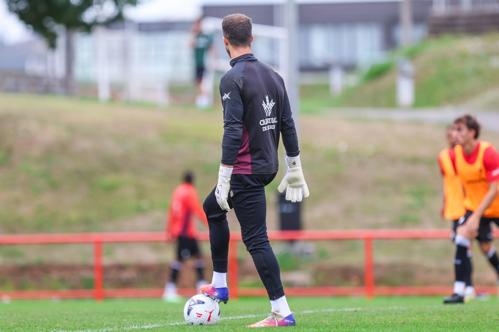
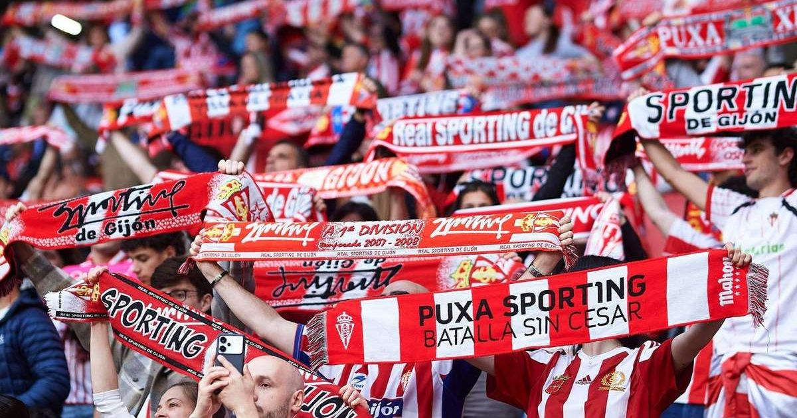
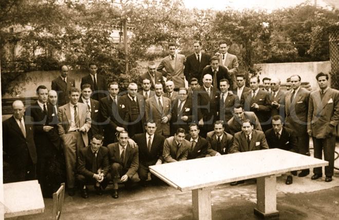
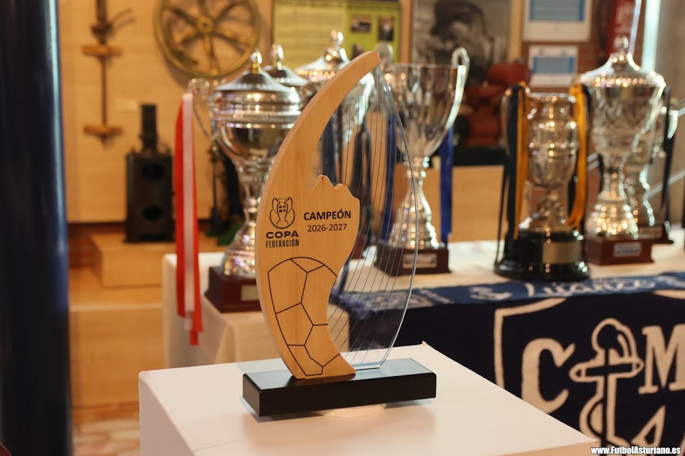

Un recorrido gráfico por los momentos más destacados de esta temporada, con imágenes de entrenamientos, afición y celebraciones.


Sesión de trabajo táctico de la semana previa al derbi asturiano.

La afición no falla ni siquiera en los desplazamientos más largos.


Dos de los momentos más recordados de la última década.
¿Tienes una foto del club que quieras compartir? Sigue estos pasos:
Fotografías cedidas por el departamento de comunicación del club.